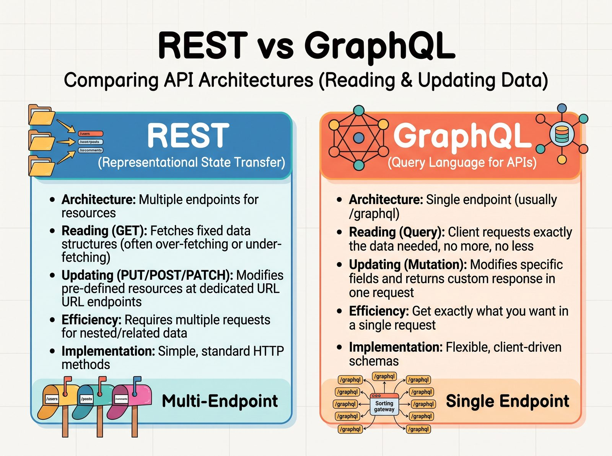
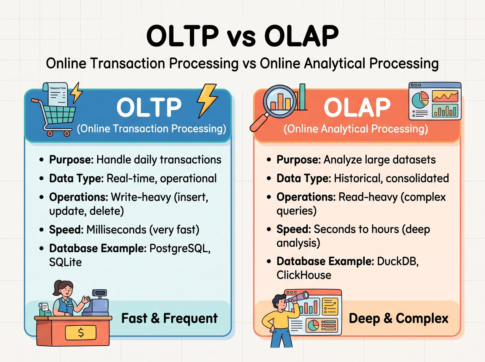
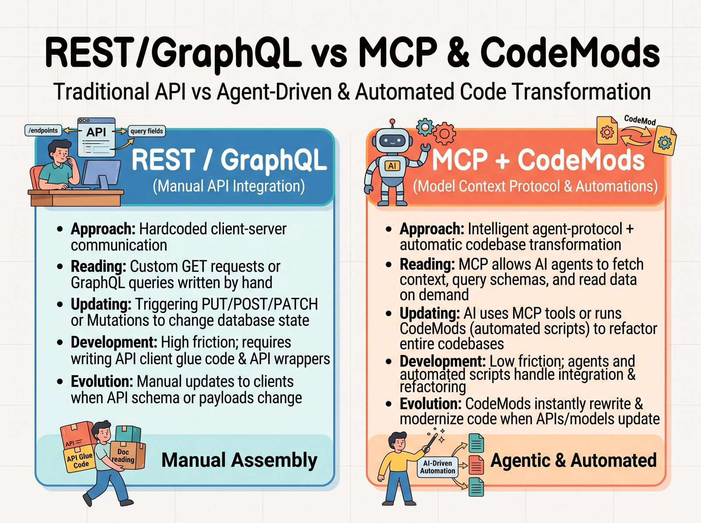

One lab, one dataset, one business question. We build the same SaaS support and billing domain twice - once as a REST API, once as a GraphQL API - then wrap both in an MCP server and let an agent drive them through a CodeMode sandbox. Every claim on this page is measured, not guessed.
Two API styles times two storage engines. The upper layer is the agent facing surface: the same operations published as MCP tools, plus a CodeMode sandbox where the model writes Python instead of juggling tool payloads.
Scroll the diagram sideways to see the whole matrix.
"How much revenue is at risk from accounts with an overdue invoice and open critical tickets?"
REST needs a small chain of calls, GraphQL needs one. Below the panels, press the button:
if the lab is running on 127.0.0.1:8000 you get the live answer, otherwise the
recorded output from the seeded dataset.
# 1. accounts that owe money curl 'http://127.0.0.1:8000/api/accounts?status=past_due&limit=50' # 2. their invoices curl 'http://127.0.0.1:8000/api/invoices?status=overdue&limit=50' # 3. their tickets, one account at a time curl 'http://127.0.0.1:8000/api/tickets?account_id=42&status=open' # 4. the plan behind the account curl 'http://127.0.0.1:8000/api/accounts/42'
query RevenueAtRisk { accounts(status: PAST_DUE, limit: 50) { items { id name invoices(status: OVERDUE) { totalCents dueAt } tickets(status: OPEN, priority: CRITICAL) { id subject priority } } } }
Press "Run the query". The page calls http://127.0.0.1:8000 in your browser. If the lab is not running you get the recorded output from the seeded dataset instead.
Press "Run the query". The page posts a GraphQL document to http://127.0.0.1:8000/graphql in your browser. If the lab is not running you get the recorded output from the seeded dataset instead.
REST: one HTTP call per resource, the client stitches the graph together. - round trips add up, and the N+1 trap waits for every account - caches work per URL, which is simple and predictable - errors are HTTP status codes, so the client branch is explicit GraphQL: one HTTP call, the server resolves the graph. - the client asks for exactly the fields it needs, no over fetching - a DataLoader style batch loader keeps the N+1 trap out - errors arrive inside the payload, so HTTP 200 does not mean success
The sketches that started the project. Each one becomes a chapter with runnable commands, numbers and traces.

The lab measures round trips, the N+1 trap, error shapes, caching and versioning.

SQLite holds the operational truth, an ETL materialises the star schema into DuckDB.

The model pays for the tool schemas once, the intermediate payloads never enter the context.
One pixi environment, one ASGI app, one port. The chapters are markdown files in the repo, every command is copy and paste ready.